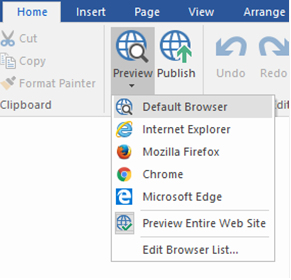
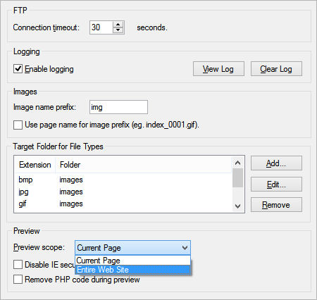
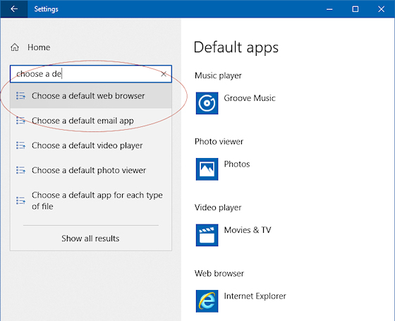

Preview a page in your Browser
Select File->Preview in Browser->Default Browser (F5) to preview the current page in your default browser. It's also possible to change the browser that is used for previewing. Go to File->Preview in Browser->Edit Browser List to add/edit the list of browsers that can be used to preview the pages you are working on.
Select File->Preview in Browser->Default Browser (F5) to preview the current page in your default browser. It's also possible to change the browser that is used for previewing. Go to File->Preview in Browser->Edit Browser List to add/edit the list of browsers that can be used to preview the pages you are working on.

Depending on the preview scope (Tools->Options->Publish & Preview), you can either preview a single page or the entire web site.

Important notes
Internal links do not work in Preview, unless you have set the Preview Scope to Entire Web Site!
If you only preview a single page, your browser will not be able to find all the other (internal) pages unless you also generate them!
You cannot preview pages with PHP in your browser. They can only be viewed on a webserver with PHP installed.
However you can remove PHP code for preview by enabling 'Remove PHP during preview' in Tools->Options->Publish & Preview.
Note: this will not change the structure of the website, so if you have an internal link to a PHP page then links will be invalid during preview!
Default browser configuration
The default browser is a system setting. This is not specific to WYSIWYG Web Builder.
You can change the default web browser in the Windows Control Panel.
Internal links do not work in Preview, unless you have set the Preview Scope to Entire Web Site!
If you only preview a single page, your browser will not be able to find all the other (internal) pages unless you also generate them!
You cannot preview pages with PHP in your browser. They can only be viewed on a webserver with PHP installed.
However you can remove PHP code for preview by enabling 'Remove PHP during preview' in Tools->Options->Publish & Preview.
Note: this will not change the structure of the website, so if you have an internal link to a PHP page then links will be invalid during preview!
Default browser configuration
The default browser is a system setting. This is not specific to WYSIWYG Web Builder.
You can change the default web browser in the Windows Control Panel.

If this still doesn't work then there may be another problem with your system. In that case we recommend to use a system repair tool like CCleaner or Fix-It Utilities to repair file associations.